전자기사 (2007-09-02 기출문제)
1과목: 전기자기학
1. 환상철심에 권선수가 각각 N1과 N2인 두 코일이 완전 결합하고 있다. 권선수가 N1인 코일의 자기인덕턴스가 L1이라 하면 상호인덕턴스 M 은?
- N1/L1N2
- N2/L1N1
- L1N1/N2
- L1N2/N1
(정답률: 알수없음)

2. 공기 중에 고립된 지름 1m의 구도체를 105 [V]로 충전한 다음 이 에너지를 10-5초 사이에 방전한 경우의 평균 전력은 약 몇 [kW]인가?
- 1390
- 2780
- 5560
- 6950
(정답률: 알수없음)
3. 무한대 평면도체와 d[m] 떨어진 평행한 무한장 직선도체에 ρ[C/m]의 선전하분포가 주어졌을 때 직선도체의 단위 길이당 받은 힘은 몇 [N/m]인가? (단, 공간의 유전율은 ε이다.)
- 0
- ρ2/πεd
- ρ2/2πεd
- ρ2/4πεd
(정답률: 알수없음)
4. 정전용량이 1[μF]인 공기 콘덴서가 있다. 이 콘덴서 판간의 1/2인 두께를 갖고 비유전율 εr = 2인 유전체를 그 콘덴서의 한 전극면에서 접촉하여 넣었을 때 전체의 정전용량은 몇 [μF]이 되는가?
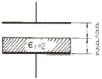
- 2
- 1/2
- 4/3
- 5/3
(정답률: 알수없음)
5. 자화된 철의 온도를 높일 때 자화가 서서히 감소하다가 급격히 강자성이 상자성으로 변하면서 강자성을 잃어버리는 현상이 있다. 이 급격한 자성변화의 온도를 무엇이라 하는가?
- 켈빈(Kelvin) 온도
- 연화(Transition) 온도
- 전이 온도
- 퀴리(Curie) 온도
(정답률: 알수없음)
6. 다음 중 매질이 완전 절연체인 경우의 전자(電磁) 파동 방정식을 표시하는 것은?
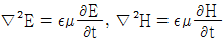
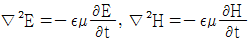
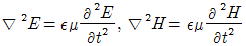
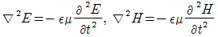
(정답률: 알수없음)
7. 단면적 S[m2]의 철심에 ø[Wb]의 자속을 통하게 하려면 H[AT/m]의 자계가 필요하다. 이 철심의 비투자율은?
- 107ø/8πSH
- 107ø/4πSH
- 107ø/2πSH
- 107ø/πSH
(정답률: 알수없음)
8. 그림과 같이 무한히 넓은 무한평면도체로부터 d[m] 떨어진 점에 Q[C]의 점전하가 있을 때
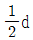
[m]인 P점의 전위는 몇 [V]인가?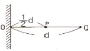
- Q/πε0d
- Q/3πε0d
- 8Q/9πε0d
- 10Q/9πε0d
(정답률: 알수없음)
9. 진공 중에서 x = 1m, 3m인 각 점에 1[μC]과 2[μC]의 점전하가 있을 때 전계 에너지는 몇 [J]인가?
- 7.5×10-6
- 7.5×10-3
- 9.0×10-6
- 9.0×10-3
(정답률: 알수없음)
10. 한 변의 길이가 ℓ인 정삼각형 회로에 전류 I가 흐르고 있을 때 삼각형 중심에서의 자계의 세기 [AT/m]는?
- 9I/2πℓ
- 9I/πℓ
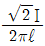
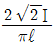
(정답률: 알수없음)
11. 철심에 25회의 권선을 감고 1[A]의 전류를 통했을 때 0.01[Wb]의 자속이 발생하였다. 같은 철심을 사용하여 자기인덕턴스를 1[H]로 하려면 도선의 권수는?
- 23
- 50
- 75
- 100
(정답률: 알수없음)
12. 전계
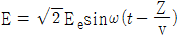
[V/m]의 평면전자파가 있다. 진공 중에서 자계의 실효치는 몇 [AT/m] 인가?- 2.65×10-1E0
- 2.65×10-2E0
- 2.65×10-3E0
- 2.65×10-4E0
(정답률: 알수없음)
13. 도체내의 전자파의 속도를 v, 감쇄정수를 α, 위상정수를 β, 각속도를 ω라고 할 때 전자파의 속도 v는?
- β/ω
- ω/β
- α/ω
- ω/α
(정답률: 알수없음)
14. 유전율 ε인 유전체를 넣은 무한장 동축 케이블의 중심 도체에 q[C/m]의 전하를 줄 때 중심축에서 r[m](내외반지름의 중간점)의 전속밀도는 몇 [C/m2]인가?
- q/4πr2
- q/4πεr2
- q/2πr
- q/2πεr
(정답률: 알수없음)
15. 다음 중 옳은 것은?
- 자계내의 자속밀도는 벡터포텐셜을 폐로선적분하여 구할 수 있다.
- 벡터포텐셜은 거리에 반비례하며 전류의 방향과 같다.
- 자속은 벡터포텐셜의 curl을 취하면 구할 수 있다.
- 스칼라포텐션은 정전계와 정자계에서 모두 정의되나 벨터포텐셜은 정전계에서만 정의된다.
(정답률: 알수없음)
16. 플레밍(Flaming)의 왼손법칙을 나타내는 F-B-I에서 F는 무엇인가?
- 전동기 회전자의 도체의 운동방향을 나타낸다.
- 발전기 정류자의 도체의 운동방향을 나타낸다.
- 전동기 자극의 운동방향을 나타낸다.
- 발전기 전기자의 도체의 운동방향을 나타낸다.
(정답률: 알수없음)
17. 압전기 현상에서 분극이 응력에 수직한 방향으로 발생하는 현상은?
- 종효과
- 횡효과
- 역효과
- 직접효과
(정답률: 알수없음)
18. 특성임피던스가 각각 η1, η2인 두 매질의 경계면에 전자파가 수직으로 입사할 때 전계가 무반사로 되기 위한 조건으로 가장 알맞은 것은?
- η1 = η2
- η2 = 0
- η2 = 0
- η1ㆍη2 = 1
(정답률: 알수없음)
19. C1, C2의 두 폐회로간의 상호인덕턴스를 구하는 노이만의 공식은?
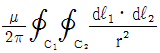
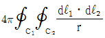
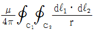
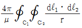
(정답률: 알수없음)
20. 자유공간에서 변위전류가 만드는 것은?
- 전계
- 전속
- 자계
- 자속
(정답률: 알수없음)
2과목: 회로이론
21. ω = 200[rad/sec]에서 동작하는 두 개의 회로소자로 구성된 직렬회로에서 전류가 전압보다 45°앞선다고 한다. 이 회로소자 중 하나는 5[Ω]인 저항이다. 나머지 소자는 무엇이며, 값은 얼마인가?
- L, 10-1[H]
- L, 10-2[H]
- C, 10-3[F]
- C, 10-4[F]
(정답률: 알수없음)
22. 교류 브리지가 평형 상태에 있을 때 L의 값은?
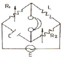
- L = R2(R1C)
- L = CR1R2
- L = C/(R1R2)
- L = (R1R2)/C
(정답률: 알수없음)
23. 그림과 같은 T형 4단자 회로의 임피던스 파라미터 Z21은?
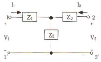
- Z1+Z2
- -Z2
- Z2
- Z2+Z3
(정답률: 알수없음)
24. 100[V], 60[W]의 형광등에 100[V]를 가했을 때, 0.5[A]의 전류가 흐르고 그 소비전력은 40[W]이었다면, 이 형광등의 역률은?
- 0.5
- 0.6
- 0.7
- 0.8
(정답률: 알수없음)
25. 지수함수 e-at의 라플라스 변환은?
- 1/S-α
- 1/S+α
- S+α
- S-α
(정답률: 알수없음)
26. 다음 회로에서 특성 임피던스 ZO는?
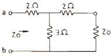
- 2[Ω]
- 3[Ω]
- 4[Ω]
- 5[Ω]
(정답률: 알수없음)
27. RC직렬회로에서 직류전압을 인가할 때 전류값이 초기값의 e-1배가 되는 시간은 몇 [s]인가?
- 1/RC
- RC
- C/R
- R
(정답률: 알수없음)
28. 다음 그림과 같은 파형의 라플라스(Laplace) 변환은?
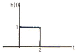
- H(s) = S-Se-2S
- H(s) = Se-2S/S+2
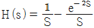
- H(s) = e-2S/S(S+2)
(정답률: 알수없음)
29. 그림과 같은 회로망 N에서 포트 2개를 개방했을 때 전압이득 G12를 임피던스 파라미터로 나타내면?
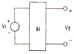
- Z12/Z11
- Z22/Z12
- Z12/Z22
- Z11/Z21
(정답률: 알수없음)
30. LC 공진회로에서 R = 3Ω, L = 15mH 일 때 2㎑의 정현파를 인가하였더니 공진이 발생했다. 이 때 캐패시턴스 C는 약 얼마인가?
- 422nF
- 422μF
- 53⑤μF
- 47μF
(정답률: 알수없음)
31. 단자 회로에 인가되는 전압과 유입되는 전류의 크기만을 생각하는 겉보기 전력은?
- 유효전력
- 무효전력
- 평균전력
- 피상전력
(정답률: 알수없음)
32. 시정수 T인 RL 직렬회로에 t = 0 에서의 직류전압을 가하였을 때 t = 4T 에서의 회로 전류는 정상치의 몇 %인가? (단, 초기치는 0으로 한다.)
- 63
- 86
- 95
- 98
(정답률: 알수없음)
33. 선형사변 인덕터의 자속이 ø(t) = L(t)i(t)일 때 전압 V(t)는?
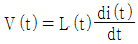
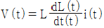
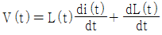
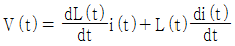
(정답률: 알수없음)
34. 2단자 임피던스가 S+3/S2+3S+2일 때 극점(pole)은?
- -3
- 0
- -1, -2, -3
- -1, -2
(정답률: 알수없음)
35. 저항 R과 리액턴스 X를 직렬로 연결할 때의 역률은?
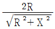
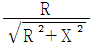
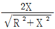
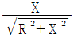
(정답률: 알수없음)
36. 여러 개의 기전력을 포함하는 선형 회로망내의 전류분포는 각 기전력이 단독으로 그의 위치에 있을 때 흐르는 전류분포의 합과 같다는 것은?
- 키르히호프 법칙
- 중첩의 원리
- 테브난의 정리
- 노튼(Norton)의 정리
(정답률: 알수없음)
37. 무한장 전송 선로의 특성 임피던스 Z0는? (단, R, L, G, C 는 각각 단위 길이당의 저항, 인덕턴스, 컨덕턴스, 캐패시턴스이다.)
- Z0 = (R+jωL)(G+jωC)

- Z0 = R+jωL/G+jωC

(정답률: 알수없음)
38. 다음과 같은 R-C 회로의 구동점 임피던스로 옳은 것은?
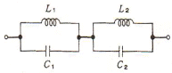
- 1/s2+1
- s/s2+1
- 2/s2-1
- 2s/s2+1
(정답률: 알수없음)
39. 기본파의 10[%]인 제3고조파와 30[%]인 제5고조파를 포함하는 전압파의 왜형률은 약 얼마인가?
- 0.5
- 0.31
- 0.1
- 0.42
(정답률: 알수없음)
40. 그림과 같은 유도결합회로에서 전압방정식은?
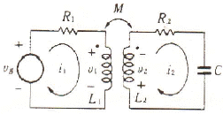
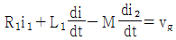
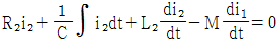
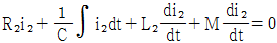
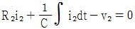
(정답률: 알수없음)
3과목: 전자회로
41. 이득 40dB의 저주파 증폭기가 10%의 왜율을 가지고 있을 때 이것을 1% 이내로 개선하기 위해서는 얼마만큼의 전압 부궤환을 걸어주어야 하는가?
- 약 10dB의 부궤환을 걸어주어야 한다.
- 약 20dB의 부궤환을 걸어주어야 한다.
- 약 25dB의 부궤환을 걸어주어야 한다.
- 약 40dB의 부궤환을 걸어주어야 한다.
(정답률: 알수없음)
42. 다음 트랜지스터 소신호 증폭기의 입력 (Ri) 및 출력(Ro) 임피던스는 어느 값에 가장 가까운가? (단, hie = 1[kΩ], hfe =100 이다.)
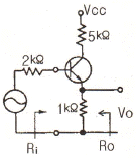
- Ri = 4[kΩ], Ro = 1[kΩ]
- Ri = 30[kΩ], Ro = 102[kΩ]
- Ri = 102[kΩ], Ro = 30[kΩ]
- Ri = 1[kΩ], Ro = 4[kΩ]
(정답률: 알수없음)
43. 그림과 같은 회로에서 입력과 출력의 관계는? (단, 소자는 모두 이상적이며, A는 연산 증폭기이다.)
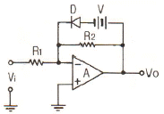
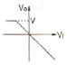
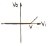
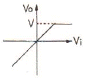
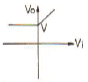
(정답률: 알수없음)
44. 전압증폭도 Av = 5000 인 증폭기에 부궤환을 걸 때 전압증폭도 Af = 800 이 되었다. 이 때 궤환율 β는 얼마인가?
- 0.1⑤%
- 0.2⑤%
- 0.3⑤%
- 0.4⑤%
(정답률: 알수없음)
45. RC 결합 증폭기에서 구형파 전압을 입력시켜 그림과 같은 출력이 나온다면 이 증폭기의 주파수 특성은?
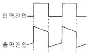
- 고역특성이 주로 좋지 않다.
- 중역특성이 주로 좋지 않다.
- 저역특성이 주로 좋지 않다.
- 고역과 저역특성이 모두 좋지 않다.
(정답률: 알수없음)
46. 다음과 같은 회로에서 입력에 정현파를 인가하였을 때 출력 파형으로 가장 적합한 것은? (단, ZD는 제너다이오드이다.)
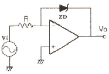
- 구형파형
- 정현파형
- ramp 파형
- 톱날파형
(정답률: 알수없음)
47. C급 증폭회로의 장점으로 가장 적합한 것은?
- 감소한다.
- 변화가 없다.
- 잡음이 감소한다.
- 출력파형의 일그러짐이 감소한다.
(정답률: 알수없음)
48. 전류 궤환 증폭기의 출력 임피던스는 궤환이 없을 때와 비교하면 어떻게 되는가?
- 감소한다.
- 변화가 없다.
- 증가한다.
- 입력신호의 크기에 따라 증가 또는 감소한다.
(정답률: 알수없음)
49. 그림에서 Voi 는 연산 증폭기의 입력 직류 오프셋 전압이다. 직류 출력 오프셋 전압 Vos는 어떻게 되는가?
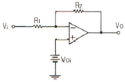
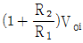
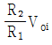
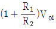
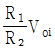
(정답률: 알수없음)
50. 연산증폭기의 상승시간이 tr인 경우에 이득 대역폭 곱(GㆍB)은 0.35/tr의 식으로 계산된다. 어떤 연산증폭기의 상승시간 tr이 0.175μs 일 때 이 연산증폭기를 이용하여 10kHz의 정현파 신호를 증폭하려고 할 때 최대로 얻을 수 있는 전압증폭도(이득)는 약 몇 dB인가?
- 26
- 34
- 40
- 46
(정답률: 알수없음)
51. 다음 회로에서 궤환율(feedback factor) β는 약 얼마인가?
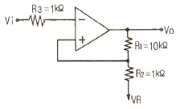
- 0.9
- 0.12
- 1.52
- 10.25
(정답률: 알수없음)
52. 커패시터로 필터를 구성한 전파 정류기에서 부하 저항이 감소하면 리플(ripple) 전압은?
- 감소한다.
- 증가한다.
- 관계없다.
- 주파수가 변화한다.
(정답률: 알수없음)
53. 궤환 증폭기에 대한 보드 선도에서 phase margin은? (단, θ는 l Aβ l가 1이 되는 주파수에서 Aβ의 위상각이고, A는 궤환이 없을 때의 전압 증폭율이며, β는 궤환율이다.)
- 180° - θ
- 90° - θ
- 45° - θ
- 0° - θ
(정답률: 알수없음)
54. 다음 중 FM 변조파를 복조할 수 있는 것은?
- 헤테로다인 복조기
- 링 검파기
- 비 검파기
- 비직선 검파기
(정답률: 알수없음)
55. 디지털 신호(2진 데이터)의 정보 내용에 따라서 반송파의 주파수를 변화 시키는 것은?
- ASK
- FSK
- PSK
- DPSK
(정답률: 알수없음)
56. 다음 회로 중 입력 저항이 가장 크게 될 수 있는 것은?
- bootstrapping 회로
- cascade 증폭기 회로
- 트랜지스터 chopper 회로
- 베이스 접지형 증폭기 회로
(정답률: 알수없음)
57. 다음 회로의 명칭으로 가장 적합한 것은?
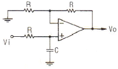
- 저역통과 여파기
- 고역통과 여파기
- AC-DC 변환기
- 시미트 트리거
(정답률: 알수없음)
58. 이상형 RC 발진기에 대한 설명 중 옳은 것은?
- 발진을 계속하기 위해서 증폭도는 29보다 작아야 한다.
- 펄스 발진기로 많이 사용된다.
- 100[MHz]대의 높은 주파수 발진용으로 적합하다.
- 병렬저항형 이상형 발진기의 발진주파수는
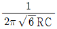
[Hz]이다.
(정답률: 알수없음)
59. 1[kHz]의 신호파로 10[MHz]의 반송파를 주파수 변조하였을 때 최대주파수편이가 50[kHz]이면 이 FM 신호의 대역폭은?
- 약 1000[kHz]
- 약 100[kHz]
- 약 50[kHz]
- 약 1[kHz]
(정답률: 알수없음)
60. 발진주파수 변동 원인과 방지책으로 잘못된 것은?
- 주위온도 변화 : 항온조를 사용한다.
- 부하 변동 : 발진기 후단에 완충증폭기를 사용한다.
- 회로소자 변화 : 방습제를 사용한다.
- 전원전압 변동 : 전력증폭기 등 다른 회로 전원과 공동으로 사용한다.
(정답률: 알수없음)
4과목: 물리전자공학
61. 진성 반도체에서 온도가 상승하면?
- 반도체의 저항이 증가한다.
- 원자의 에너지가 증가한다.
- 정공이 전도대에 발생된다.
- 금지대가 감소한다.
(정답률: 알수없음)
62. 온도가 상승하면 N형 반도체의 Ferni 중위는 어디에 위치하게 되는가?
- 전도대역쪽으로 접근
- 가전자대역쪽으로 접근
- 금지대 영역 중앙으로 접근
- 금지대역 중앙과 가전자대역 중간
(정답률: 알수없음)
63. Fermi-Dirac의 분포 함수는? (단, E는 에너지 준위, α, β는 Lagrangean multiplier 이다.)
- eα+β-1
- P = 1/εα+βE
- P = εα+β+1
(정답률: 알수없음)
64. 전계의 세기가 E = 100[V/m]인 전계 중에 놓인 전자에 가해지는 전자의 가속도는 약 얼마인가? (단, 전하량 : 1.602×10-19[C], 전자의 질량은 9.11 × 10-31[㎏]이다.)
- 1.750 [m/s2]
- 1.602×1013 [m/s2]
- 5.93×105 [m/s2]
- 1.75×1013 [m/s2]
(정답률: 알수없음)
65. 금속의 2차 전자 방출비에 대하여 가장 옳게 설명한 것은?
- 항상 일정하다.
- 방출비 값은 항상 1보다 작다.
- 금속의 종류에 따라서 달라진다.
- 2차 전자는 반사되는 전자를 의미한다.
(정답률: 알수없음)
66. 그림과 같이 역직렬로 접속된 바리스터(Varistor)의 특성으로 적합한 것은?
- 낮은 전압에서 큰 저항을 나타낸다.
- 높은 전압에서 큰 저항을 나타낸다.
- 낮은 전압에서 적은 저항을 나타낸다.
- 높은 전압에서 큰 저항, 낮은 전압에서 적은 저항을 나타낸다.
(정답률: 알수없음)
67. 정전계내의 전자운동에 관한 설명으로 옳지 않은 것은?
- 전자는 전계와 같은 방향의 일정한 힘을 받는다.
- 전자의 운동 속도는 인가된 전위차 V의 제곱근에 비례한다.
- 전계에 의한 전자의 운동에너지는 1/2mv2[J]이다.
- 전위차 V에 의한 가속전자의 운동에너지는 eV[J]이다.
(정답률: 알수없음)
68. 발광 다이오드(light emitting diode, LED)의 램프에 대한 설명중 옳지 않은 것은?
- 고신뢰도이다.
- 점등시 과전류가 흐른다.
- 단색광이며, 발광스펙트럼이 좁다.
- 발광 다이오드는 정격치의 직류순방향 전류를 흘리면 발광한다.
(정답률: 알수없음)
69. 전자 수가 32인 원자의 가전자 수는?
- 2개
- 4개
- 8개
- 18개
(정답률: 알수없음)
70. 트랜지스터의 베이스 폭 변조에 대한 설명으로 옳지 않은 것은?
- 컬렉터 전압 VCB가 증가함에 따라 베이스 중성 영역의 폭이 줄어든다.
- 베이스 폭의 감소는 베이스 영역의 소수 캐리어 농도의 기울기를 증대시킨다.
- 컬렉터 역바이어스의 증가에 따라 이미터 전류와 컬렉터 전류가 감소한다.
- 베이스 폭이 감소하면 전류증폭률 α가 증대한다.
(정답률: 알수없음)
71. 바렉터(varactor) 다이오드는 어떠한 양(量)들 사이의 비직선적 관계를 이용하는 소자인가?
- 전류와 전압
- 전류와 온도
- 전압과 정전용량
- 주파수와 정전용량
(정답률: 알수없음)
72. 정격 100[V], 50[W] 백열전구의 필라멘트를 0.1[sec]사이에 통과하는 전자수는? (단, 전자의 전하량 e = 1.6×10-19[C])
- 3.125×1017 [개/초]
- 6.24×1016 [개/초]
- 62.4×1017 [개/초]
- 3.125×1016 [개/초]
(정답률: 알수없음)
73. 기압 1[mmHg] 정도의 글로우 방전(glow discharge)에서 생기는 관내 발광 부분이 아닌 것은?
- 양광주 (positive column)
- 부 글로우 (negative glow)
- 음극 글로우 (cathode glow)
- 패러데이 암부 (faraday dark space)
(정답률: 알수없음)
74. 실리콘 단결정 반도체에서 N형 불순물로 사용될 수 없는 것은?
- 안티몬 (Sb)
- 비소 (As)
- 인 (P)
- 알루미늄 (Al)
(정답률: 알수없음)
75. 다음 일반적인 반도체에 대한 설명 중 옳지 않은 것은?
- 결정구조의 결함은 이동도를 감소시킨다.
- 진성반도체의 도전율은 캐리어의 농도에 따라 변한다.
- N형 반도체의 도너 원자는 정상온도에서 정전하를 갖는다.
- 반도체에 전계를 가하면 정공의 드리프트 속도의 방향은 전계와 반대 방향이다.
(정답률: 알수없음)
76. 공기 중에서 정지상태의 전자의 질량 m = 9.11×10-31[㎏]일 때 광속도 1/5의 속도로 운동하고 있는 전자의 질량은 약 얼마인가?
- 9.11×10-31[㎏]
- 9.29×10-31[㎏]
- 9.11×10-28[㎏]
- 9.29×10-28[㎏]
(정답률: 알수없음)
77. 가장 많은 방전 전류가 흐르는 방전영역은?
- 타운젠트 방전역
- 정상 글로우 방전역
- 이상 글로우 방전역
- 아크 방전역
(정답률: 알수없음)
78. 다음 설명에 대한 것으로 옳은 것은?
- 홀 효과 (Hall effect)
- 콤프턴 효과 (Compton effect)
- 쇼트키 효과 (Schottky effect)
- 흑체방사 (Black body radiation)
(정답률: 알수없음)
79. 수소 원자에서 원자핵 주위를 돌고 있는 전자가 에너지 준위 E1(= -5.14×10-12[erg])상태에서, 에너지 준위 E2(= -21.7×10-12[erg]) 상태로 천이할 때 내는 빛의 진동수는 약 얼마인가? (단, Planck 상수 h = -6.63×10-27[ergㆍsec]이다.)
- 1.2×105/sec
- 2.5×1015/sec
- 5.03×1016/sec
- 10.3×1022/sec
(정답률: 알수없음)
80. 균등자계 B내에 수직으로 속도 v로 입사한 전자의 속도를 2배로 증가시켰을 때, 전자의 운동은 어떻게 변하는가?
- 원운동의 주기는 4배가 된다.
- 원운동의 각속도는 2배가 된다.
- 원운동의 주기는 변하지 않는다.
- 원운동의 반경은 변하지 않는다.
(정답률: 알수없음)
5과목: 전자계산기일반
81. 컴퓨터의 구성요소 중 다음 설명에 해당되는 것은?
- 입력 장치
- 제어 장치
- 연산 장치
- 기억 장치
(정답률: 알수없음)
82. 다음 플립플롭의 진리표로 옳은 것은?
- q1 = 0 , q2 = 0
- q1 = 1 , q2 = 0
- q1 = 0 , q2 = 1
- q1 = 1 , q2 = 1
(정답률: 알수없음)
83. 자료구조에 대한 설명 중 옳지 않은 것은?
- 배열(array)은 원하는 자료를 즉시 읽어낼 수 있다.
- 연결 리스트(linked list)는 원하는 자료를 읽어내기 위해 리스트를 탐색하여야 한다.
- 연결 리스트는 자료의 추가나 삭제가 배열보다 어렵다.
- 배열은 기억장치 내에 연속된 기억공간을 필요로 한다.
(정답률: 알수없음)
84. 명령어가 다음과 같은 형태로 되어 있을 경우 명령어의 종류와 메모리의 최대 크기는?
- 8개, 8K
- 8개, 16K
- 16개, 1K
- 16개, 16K
(정답률: 알수없음)
85. 행의 수가 7이고 열의 수가 5인 7 × 5 이차원 배열(array) a의 각 자료의 위치는 a[행][열]로 표시한다. 행주도순서(row major order)를 사용하고 a[1][1]이 1번지일 때 a[3][4]는 몇 번지인가?
- 14
- 18
- 19
- 25
(정답률: 알수없음)
86. (3 + 4)의 덧셈을 Excess-3 코드법에 의해 계산한 결과 값은?
- 1010
- 1101
- 0111
- 1000
(정답률: 알수없음)
87. 마이크로프로세서의 속도를 프린터와 맞추기 위한 방법으로 마이크로프로세서와 입ㆍ출력장치를 동기화시키는 입ㆍ출력 제어 방식은?
- decoding method
- spooling
- daisy chain
- handshaking
(정답률: 알수없음)
88. 스택(stack)이 반드시 필요한 명령문 형식은?
- 0-주소 형식
- 1-주소 형식
- 2-주소 형식
- 3-주소 형식
(정답률: 알수없음)
89. 인터럽트가 발생 하였을 때 반드시 저장할 필요가 없는 것은?
- 프로그램의 크기
- 프로그램 계수기의 값
- 프로세서의 상태 조건 값
- 프로세서 내의 레지스터 내용
(정답률: 알수없음)
90. 명령 인출 사이클(fetch cycle)에 대한 설명으로 옳지 않은 것은?
- machine cycle에 속한다.
- 명령어를 해독하는 과정이 포함된다.
- 반드시 execution cycle에서만 발생한다.
- program counter에서 주소가 MAR로 전달된다.
(정답률: 알수없음)
91. 보수기 (Complementer)를 구성하는데 필요한 Gate는?
- AND 및 OR
- Exclusive OR
- OR와 Exclusive NOR
- NOR
(정답률: 알수없음)
92. Associative 메모리와 관련이 없는 것은?
- CAM(Content Addressable Memory)
- 고속의 Access
- Key 레지스터
- MAR(Memory Address Register)
(정답률: 알수없음)
93. 그림과 같이 J-K 플립플롭 결선하고, 클록 펄스를 계속 인가하였을 때의 출력상태는?
- Set 된다.
- Reset 된다.
- Togging 된다.
- 동작불능이다.
(정답률: 알수없음)
94. 다음 중 제 4세대 마이크로프로세서 MCR68020, MC68030 및 Intel 80386에서 주로 사용되는 반도체 기술은?
- HCMOS
- HMOS
- NMOS
- PMOS
(정답률: 알수없음)
95. DMA(Direct Memory Access) 장치의 역할은?
- 주기억장치와 CPU 사이의 정보 교환을 담당한다.
- CPU로 옮긴 데이터를 메모리에서 찾아 전송하는 역할을 한다.
- 메모리와 입ㆍ출력장치 간에 대량의 자료를 전송하는 역할을 한다.
- CPU에서 입ㆍ출력장치로 데이터를 전송하는 역할을 한다.
(정답률: 알수없음)
96. 다음 중 애니메이션, 사운드, 비디오 등의 멀티미디어를 포함한 발표자료를 만들고자 한다. 이 때 가장 편리하게 사용할 수 있는 응용소프트웨어는?
- MS 파워포인트(power point)
- 노트패드(notepad)
- MS 엑셀(excel)
- Adobe 포토샵(photoshop)
(정답률: 알수없음)
97. RISC(Reduced Instruction Set Computer) 시스템과 관련이 없는 것은?
- 하나의 명령어가 한 가지 이상의 명령어를 갖고 있다.
- 대부분의 명령어가 하나의 머신 사이클 내에 수행된다.
- 고정된 길이의 명령어를 제공한다.
- 제어 방식은 하드와이어(Hardwired)적이다.
(정답률: 알수없음)
98. 다음 프로그래밍 언어 중 고급언어가 아닌 것은?
- Assembly
- C
- FORTRAN
- COBOL
(정답률: 알수없음)
99. 순서도의 기호 중에서 다음 기호가 나다태는 것은?
- 판단
- 처리
- 터미널
- 입ㆍ출력
(정답률: 알수없음)
100. 수행 시간이 길어 특수 목적의 기계 이외에는 별로 사용하지 않는 명령 형식이지만 연산 후 입력 자료가 변환되지 않고 보존되는 장점을 가진 명령 형식은?
- 3-주소명령형식
- 2-주소명령형식
- 1-주소명령형식
- 0-주소명령형식
(정답률: 알수없음)
M = k√(L1L2)
여기서 k는 결합계수로, 완전 결합일 경우 k=1이다. 따라서 k=1으로 가정하면,
M = √(L1L2)
또한, 자기인덕턴스 L은 다음과 같이 정의된다.
L = N^2μA/l
여기서 N은 권선수, μ는 자기유도율, A는 횡단면적, l은 길이이다. 따라서 N과 L은 다음과 같은 관계가 있다.
L = N^2μA/l
NL = N^3μA
L/N = NμA
따라서 L1/N1 = μA1, L2/N2 = μA2 이므로,
M = √(L1L2) = √(N1N2μA1μA2) = N1√(μA1/μA2)N2 = L1N2/N1
따라서 정답은 "L1N2/N1"이다.